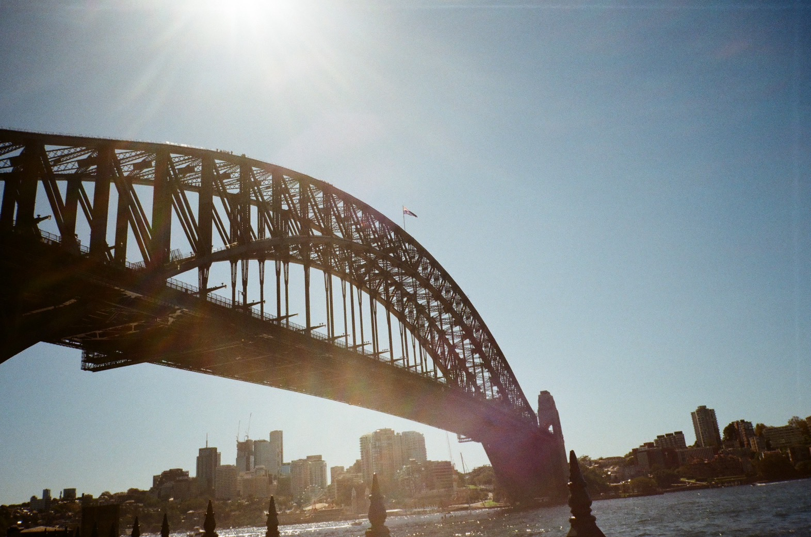

Step 01
Sydney, held in afternoon light
The harbour always asks for patience. I waited for the water to flatten, then let the frame hold the quiet rather than the postcard.
Open gallery ›EST. 2024 — PERSONAL FILM ARCHIVE
A second look at ordinary life through analog photography. Documenting quiet moments, honest light, and the beauty of film grain.
I shoot film to slow down. I like the waiting, the mistakes, and the surprise. This site is my small archive — places, people, and the feeling of a day.
RECENT WORK
Curated film diary — 2025



Step 01
The harbour always asks for patience. I waited for the water to flatten, then let the frame hold the quiet rather than the postcard.
Open gallery ›Step 02
I like when the frame keeps a slight imbalance. It feels closer to memory than to documentation, and film is generous with that.
Personal note — keep the pace slow.Step 03
Some rolls are less about landmarks and more about how a place settles into its corners. This one stayed with shadows, signs, and long pauses between crossings.
Archive tag — city study.Step 04
I usually end a roll on something quieter. A line of sea, a little empty space, and enough room for the day to fade out properly.
Read film notes ›Pick what you want to see today.